보이스&톤
보이스는 유지하고, 톤은 상황에 맞게 조절합니다
IBK기업은행의 말투와 태도는 일관되게 유지하되, 고객 상황과 업무 맥락에 맞추어 표현 방식을 조정합니다[1].
보이스 Voice
IBK기업은행이 고객을 대하는 일관된 말투와 태도
-
책임있는
사실과 명확한 기준으로 신중하게 말하기
-
함께하는
고객이 과정을 끝까지 이어갈 수 있도록 함께하기
-
배려하는
고객의 상황과 부담을 고려해 차분하게 말하기
톤 Tone
고객 상황과 화면 목적에 따라 조절하는 표현 방식
-
믿음직한
고객이 안심하고 판단할 수 있도록 전달하는 톤
-
명료한
필요한 내용을 쉽고 분명하게 전달하는 톤
-
유용한
고객에게 필요한 제안을 자연스럽게 전달하는 톤
-
친절한
이해하기 쉽게 풀어서 전달하는 톤
보이스&톤이 필요한 이유
모든 화면과 채널에서 일관된 말하기 기준을 유지하여 고객이 금융 정보를 쉽게 이해하고 다음 행동을 안심하고 이어갈 수 있도록 돕습니다[2].
채널과 화면이 달라도 IBK기업은행다운 말투와 태도를 유지하여
일관된 경험으로 느낄 수 있게 합니다.
복잡한 금융 정보와 절차를 쉽고 명확하게 전달해
고객이 다음 행동을 자연스럽게 이어갈 수 있도록 돕습니다.
인증, 오류, 이체 같은 민감한 상황에서도
고객이 안심하고 진행할 수 있도록 안내합니다.
안내, 오류, 완료, 혜택 등 상황과 목적에 따라
정보 밀도와 표현 강도를 조절합니다.
적용 방법
화면의 상황을 먼저 판단한 뒤, 보이스 기준은 유지하고 적절한 톤을 선택하여 메시지로 구체화합니다.
-
01
상황 판단
고객이 확인해야 할 정보와 행동을 파악합니다.
-
02
IBK 보이스 적용
보이스가 문구 전반에
유지되는지 확인합니다. -
03
톤 선택
상황의 목적과 민감도에 따라 강조할 톤을 선택합니다.
-
04
메시지 작성
문구를 작성한 뒤, 보이스와 톤 기준에 맞는지 확인합니다.
IBK기업은행 페르소나
페르소나는 IBK기업은행의 말투와 태도를 구체화한 기준입니다.
“믿음직한 금융 길잡이”는 복잡한 금융 업무를 고객이 쉽게 이해하고 완료할 수 있도록, 필요한 정보와 절차를 차분하게 안내합니다.
믿음직한 금융 길잡이
- 차분하고 단정하게 말합니다.
- 신중하고 책임감 있게 안내합니다.
- 핵심 정보를 먼저 파악하여 앞에 둡니다.
- 복잡한 내용은 쉽게 풀어 설명합니다.
- 헷갈릴 수 있는 부분을 먼저 안내합니다.
- 원인, 해결 방법, 다음 행동을 제시합니다.
- 확인된 정보와 기준으로 믿고 판단할 수 있는 표현
- 조건, 금액, 기간, 결과를 구체적으로 안내하는 표현
- 다음 행동은 분명하게, 같은 의미는 같은 용어로 이어지는 일관된 표현
- 원인, 기준, 다음 행동이 안내되지 않아 고객이 판단하기 어려운 표현
- 내부 용어나 개발 용어처럼 고객이 이해하기 어려운 표현
- 과하게 가볍거나 혜택만 강조해 조건을 충분히 확인하기 어려운 표현
- [1] Moran, K. (2016). The four dimensions of tone of voice. Nielsen Norman Group. https://www.nngroup.com/articles/tone-of-voice-dimensions/
- [2] Nielsen, J. (1994). 10 usability heuristics for user interface design. Nielsen Norman Group. https://www.nngroup.com/articles/ten-usability-heuristics/
보이스는 IBK기업은행이 고객을 대하는 일관된 말투와 태도
기업 고객과 개인 고객의 경제활동을 돕는 금융 길잡이로서, IBK기업은행은 고객이 정보를 쉽게 이해하고 필요한 과정을 끝까지 이어가도록 안내합니다.
IBK기업은행의 보이스는 책임 있게 말하고, 필요한 정보를 함께 안내하며, 고객의 부담을 덜어주는 태도입니다[1-5].
책임있는
- 확인된 정보와 기준으로 전달합니다.
- 기준과 조건을 분명히 작성합니다.
- 같은 의미는 같은 용어로 표현합니다.
함께하는
- 현재 단계와 남은 절차를 안내합니다.
- 판단에 필요한 기준과 영향을 제시합니다.
- 다음 단계를 명확히 설명합니다.
배려하는
- 고객의 부담을 고려하여 말합니다.
- 오류나 불안 상황도 차분하게 안내합니다.
- 어려운 절차를 쉽게 설명합니다.
책임있는
정해진 기준과 사실을 바탕으로 정보를 신중하게 전달합니다.
- 추측이나 과장 없이 확인된 정보만 전달합니다.
- 금액, 조건, 기간, 결과처럼 중요한 정보는 다르게 해석되지 않도록 명확히 작성합니다.
- 같은 의미는 화면과 채널이 달라도 일관된 기준으로 표현합니다.
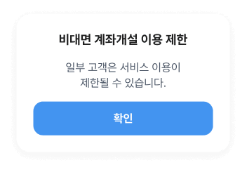
제한 대상이 모호하여 고객이
가입 가능 여부를 판단하기 어렵습니다.
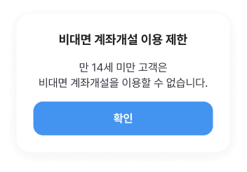
제한 대상을 구체적으로 안내하여
가입 가능 여부를 바로 알 수 있도록 돕습니다.
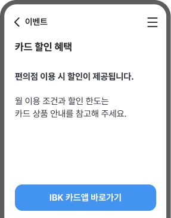
할인 기준이 모호하여 혜택 적용 여부를
판단하기 어렵습니다.
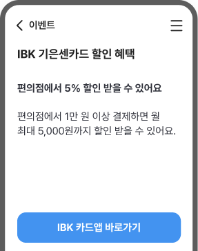
조건과 한도를 구체적으로 안내하여
혜택 기준을 정확히 알 수 있도록 돕습니다.
함께하는
고객이 복잡한 과정에서 흐름을 놓치지 않고, 필요한 일을 끝까지 이어갈 수 있도록 안내합니다.
- 고객이 현재 어느 단계에 있고 무엇을 해야 하는지 알려줍니다.
- 판단 기준과 다음 행동을 가까운 위치에 함께 제시합니다.
- 단계가 이어지는 과정에서는 다음 절차와 영향, 예상 결과를 미리 안내합니다.
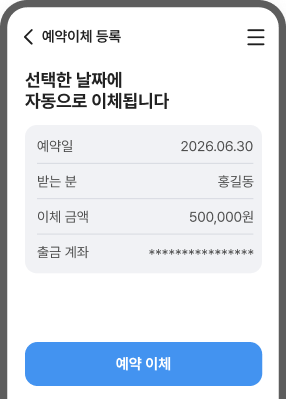
예약 결과만 알려서, 고객이 예약한 내역을
어디서 확인해야 할지 알 수 없습니다.
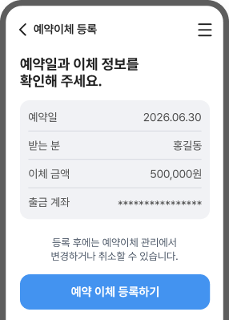
예약 결과와 내역 조회 방법까지 안내하여
예약 뒤에도 행동을 이어갈 수 있도록 돕습니다.
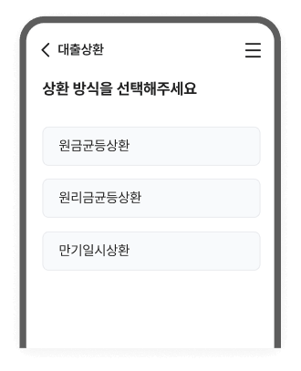
선택지마다 결과가 어떻게 다른지 알기 어려워서
고객이 스스로 판단하기 어렵습니다.
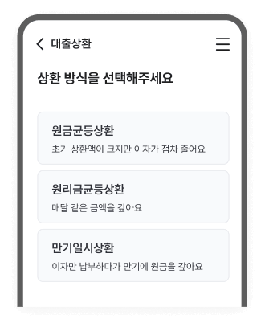
각 선택지의 결과를 함께 안내하여
고객이 상황에 맞게 결정할 수 있도록 돕습니다.
배려하는
고객이 부담을 느낄 수 있는 상황을 고려하여 차분하게 말합니다.
- 고객이 불안하거나 막막할 수 있는 상황에서는 현재 어떤 상태인지와 그 이유를 차분하게 설명합니다.
- 실패나 제한 상황은 고객의 잘못으로 느껴지지 않게 말하고, 가능한 해결 방법을 함께 제시합니다.
- 낯선 절차나 어려운 정보는 쉬운 표현과 순서로 풀어, 고객의 부담을 덜어줍니다.
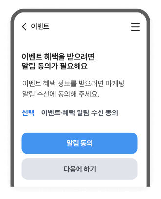
알림 동의가 혜택을 받기 위한
필수 조건처럼 보여 고객에게 부담을 줄 수 있습니다.
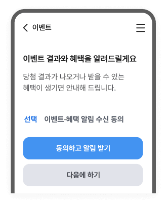
알림이 오는 상황을 먼저 안내하여
고객이 필요에 따라 선택할 수 있도록 돕습니다.
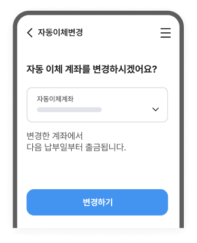
이번 납부일에는 어느 계좌에서 이체 되는지
안내하지 않아서 고객이 헷갈릴 수 있습니다.
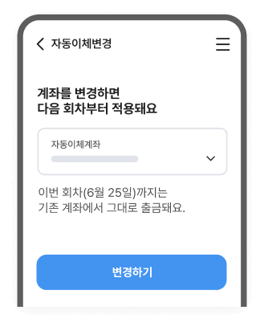
이번 납부일과 다음 납부일을 구분해 안내하여
변경 시점을 쉽게 이해할 수 있도록 돕습니다.
작성 전 확인 포인트
IBK기업은행의 보이스를 모든 문구에 반영하여 썼나요?
- 정해진 기준을 바탕으로, 추측이나 과장 없이 문구를 썼나요?
- 고객이 진행 중인 과정을 끝까지 이어갈 수 있도록 다음 행동을 안내했나요?
- 중요한 업무를 안심하고 진행할 수 있도록 확인해야 할 정보를 함께 안내했나요?
- [1] Aaker, J. L. (1997). Dimensions of brand personality. Journal of Marketing Research, 34(3), 347–356.
- [2] Nielsen, J. (1994). Enhancing the explanatory power of usability heuristics. Proceedings of the SIGCHI Conference on Human Factors in Computing Systems.
- [3] Grice, H. P. (1975). Logic and conversation. In Speech acts (pp. 41-58). Brill.
- [4] Bandura, A. (1977). Self-efficacy: Toward a unifying theory of behavioral change. Psychological Review, 84(2), 191–215.
- [5] Parasuraman, A. B. L. L., Valarie A. Zeithaml, and Leonard Berry. "SERVQUAL: A multiple-item scale for measuring consumer perceptions of service quality." 1988 64.1 (1988):
고객 상황과 화면 목적에 따라 조절하는 IBK기업은행의 표현 방식
톤은 고객의 상황과 업무 목적에 따라 달라지는 IBK기업은행의 표현 방식입니다.
정보를 분명하게 전달해야 할 때, 충분한 설명이 필요할 때, 고객의 판단을 도와야 할 때 등 다양한 상황에 맞게 표현의 강도와 정보의 밀도를 조절합니다[1-4].
믿음직한
고객이 안심하고 판단할 수 있도록 말하는 톤
필요한 상황
- 실수하면 되돌리기 어려운 행동에서 조건과 결과를 함께 확인해야 할 때
적용 방식
- 불안을 유발하지 않고, 신중하고 정확하게 안내합니다.
- 고객이 놓치면 안 되는 조건, 결과, 다음 행동을 함께 설명합니다.
주요 적용 상황
- 오류, 인증 실패, 고액 이체, 중요거래 전 확인 등
명료한
핵심 정보를 먼저 보여주고 다음 행동을 분명하게 안내하는 톤
필요한 상황
- 긴 설명보다 상태, 결과, 다음 행동을 먼저 확인해야 할 때
적용 방식
- 고객이 먼저 알아야 할 상태, 결과, 행동을 문장 앞에 씁니다.
- 불필요한 수식어를 줄이고 핵심 정보만 분명하게 전달합니다.
주요 적용 상황
- 이체 완료, 거래 상태, 로그인, 인증/알림 등
유용한
고객에게 도움이 되는 정보를 부담 없이 안내하는 톤
필요한 상황
- 고객에게 도움이 되는 이유를 알려 신청이나 참여를 제안할 때
적용 방식
- 혜택과 장점은 분명하게 안내하되, 과장된 표현은 사용하지 않습니다.
- 필요한 이유를 먼저 보여주고 다음 행동으로 자연스럽게 연결합니다.
주요 적용 상황
- 혜택 안내, 상품 추천, 이벤트, 마케팅 발송 메시지 등
친절한
낯선 금융 정보와 절차를 고객이 쉽게 이해할 수 있도록 설명하는 톤
필요한 상황
- 처음 이용하여 낯설거나 복잡한 정보와 절차를 안내할 때
적용 방식
- 금융용어와 절차는 고객에게 익숙한 표현으로 쉽게 설명합니다.
- 고객이 걱정할 수 있는 상황에서는 고객의 입장을 고려하여 설명합니다.
주요 적용 상황
- 상품 탐색, 금융용어 설명, 대출 조건 비교, 약관·절차 안내 등
톤 속성 진단
닐슨노먼그룹의 4가지 톤 속성 모델을 바탕으로, 각 톤의 표현 성향과 상황별 적용 방향을 확인합니다[5].
이를 기준으로 고객 상황과 업무 목적에 맞게 말의 강도와 정보 밀도를 조절합니다.
| 표현속성 | 믿음직한 | 명료한 | 유용한 | 친절한 |
|---|---|---|---|---|
| 진지함 |
|
|
|
|
| 격식 있는 |
|
|
|
|
| 존중하는 |
|
|
|
|
| 열정적인 |
|
|
|
|
*파란 원이 많을수록 해당 톤에서 표현 속성이 강하게 나타남을 의미합니다.
톤 조합
화면의 목적에 맞는 기본 톤을 먼저 정하고, 고객 상황에 따라 필요한 보조 톤을 더해 표현을 조정합니다.
문구 방향 설정
문구 방향 설정
문구 방향 설정
기본 톤을 먼저 정합니다
화면의 주된 목적을 확인하고문구의 기본 방향을 설정합니다.
필요한 톤을 더합니다
고객 상황에 따라 보조 톤을 선택합니다.필요한 경우 여러 톤을 함께 적용합니다.
상황에 맞게 조정합니다
기본 방향은 유지하면서 상황에 맞게정보량과 표현 강도를 조정합니다.
작성 예시
화면의 주 목적에 맞는 기본 톤을 먼저 정하고, 고객의 상태나 행동 목표에 따라 보조 톤을 조합해서 사용할 수 있습니다.
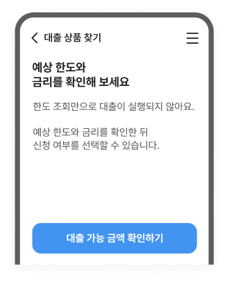
- 유용한
- 고객의 판단에 필요한 정보를 먼저 안내합니다.
- 친절한
- 부담이 될 수 있는 조건은 쉽게 풀어 설명합니다.
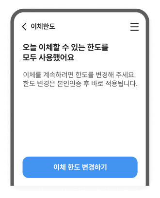
- 명료한
- 현재 상태와 필요한 행동을 안내합니다.
- 믿음직한
- 적용 시점과 결과를 알려 안심하도록 합니다.
작성 전 확인 포인트
화면의 목적과 고객이 처한 상황을 고려하여 톤을 썼나요?
- 실수하면 되돌리기 어려운 내용은 다시 확인할 수 있도록 안내했나요?
- 고객이 핵심 정보와 다음 행동을 쉽게 확인할 수 있나요?
- 고객이 필요한 정보를 확인하고 다음에 무엇을 해야 할지 알 수 있나요?
- 화면의 목적과 이용 절차를 쉽게 이해할 수 있나요?
- [1] Neusesser, T., & Sunwall, E. (2023). Error-message guidelines. Nielsen Norman Group. https://www.nngroup.com/articles/error-message-guidelines/
- [2] Sweller, John. "Cognitive load during problem solving: Effects on learning." Cognitive science 12.2 (1988): 257-285.
- [3] Fogg, Brian J. "A behavior model for persuasive design." Proceedings of the 4th international Conference on Persuasive Technology. 2009.
- [4] Brown, Penelope, and Stephen C. Levinson. Politeness: Some universals in language usage. Vol. 4. Cambridge university press, 1987.
- [5] Moran, K. (2016). The four dimensions of tone of voice. Nielsen Norman Group. https://www.nngroup.com/articles/tone-of-voice-dimensions/
믿음직한
고객이 안심하고 판단할 수 있도록 안내하는 톤
- 이체, 인증, 해지처럼 한 번 실수하면 되돌리기 어려운 행동을 안내할 때
- 조건, 제한 사항, 결과처럼 반드시 확인해야 할 정보를 전달할 때
- 신중하고 정확하게 안내하여 고객이 안심하도록 합니다.
- 조건, 결과, 다음 행동을 함께 알려 고객이 스스로 판단할 수 있도록 합니다.
작성 원칙
원인과 해결 방법을
함께 안내하기
고객이 다음에 해야 할 행동까지 안내합니다.
중요 정보는 실행 전에
다시 확인하도록 쓰기
실행 전에 다시 확인하도록 씁니다.
민감한 상황에서
신중하고 정확하게 말하기
확인된 사실만 신중한 표현으로 안내합니다.
피해야 할 것
결과만 알리는 표현
이유와 해결 방법이 없어고객이 다음 행동을 판단하기 어렵습니다.
확인보다 행동을 앞세우는 표현
결과를 알리기 전에 실행부터 권하면 고객이중요한 행동을 확인 없이 실행하게 됩니다.
가볍거나 모호한 표현
오류나 제한 상황에서고객의 불안과 혼란을 키울 수 있습니다.
작성 예시
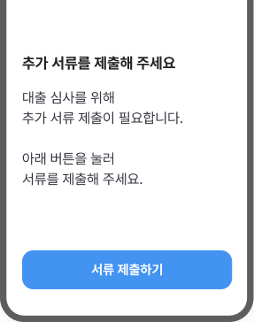
필요한 서류와 제출 이유가 명확하지 않아서
고객이 무엇을 제출해야 하는지 알기 어렵습니다.
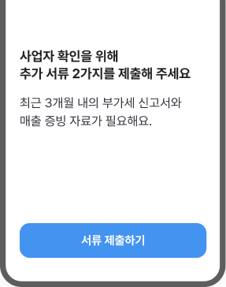
필요한 서류와 제출 이유를 함께 써서
고객이 무엇을 제출해야 하는지 알 수 있도록 돕습니다.
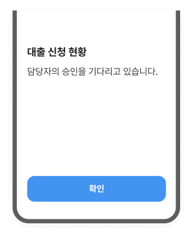
진행 상태만 막연하게 안내하여
고객이 심사가 어디까지 진행됐는지 알기 어렵습니다.
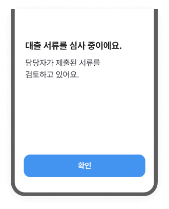
현재 상태와 진행 상황을 함께 안내하여
고객이 진행 상황을 이해할 수 있도록 돕습니다.
작성 전 확인 포인트
고객이 안심하고 판단할 수 있도록 차분하고 정확하게 썼나요?
- 실수 위험이 큰 상황은 실행 전에 다시 확인할 수 있도록 썼나요?
- 중요한 조건과 결과를 과장 없이 정확히 전달했나요?
- 고객이 필요에 따라 취소하거나 다시 확인할 수 있도록 안내했나요?
- 고객이 다음 행동을 안정적으로 이어갈 수 있게 표현했나요?
- [1] Neusesser, T., & Sunwall, E. (2023). Error-message guidelines. Nielsen Norman Group. https://www.nngroup.com/articles/error-message-guidelines/
명료한
핵심 정보를 먼저 보여주고, 다음 행동을 분명하게 안내하는 톤
- 긴 설명보다 인증, 이체, 가입 완료처럼 상태와 결과를 먼저 확인해야 할 때
- 설명보다 핵심 정보와 다음 행동을 먼저 보여야 할 때
- 고객이 먼저 알아야 할 상태, 결과, 행동을 문장 앞에 씁니다.
- 불필요한 수식어를 줄이고 핵심 정보만 분명하게 전달합니다.
작성 원칙
상태와 결과를
먼저 쓰기
상태와 결과를 앞에서 분명하게 전달합니다.
다음 행동을 짧고
분명하게 안내하기
고객이 바로 실행할 수 있도록 간결하게 씁니다.
중요한 정보는
먼저 쓰기
부가 설명은 필요할 때만 덧붙입니다.
피해야 할 것
핵심보다 설명이 앞서는 표현
고객이 현재 상태와 결과를명확하게 파악하기 어렵습니다.
모호하거나 추상적인 표현
기준이나 의미가 모호하여고객이 다음 행동을 판단하기 어렵습니다.
한 문장에 여러 내용을 넣은 표현
성격이 다른 정보가 한 문장에 혼재되어고객이 무엇을 먼저 봐야 할지 알기 어렵습니다.
작성 예시
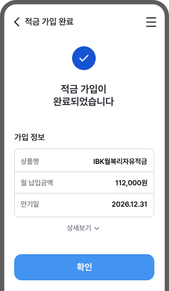
가입한 상품명이 제목에 드러나지 않아서
고객이 가입 내용을 명확히 이해하기 어렵습니다.
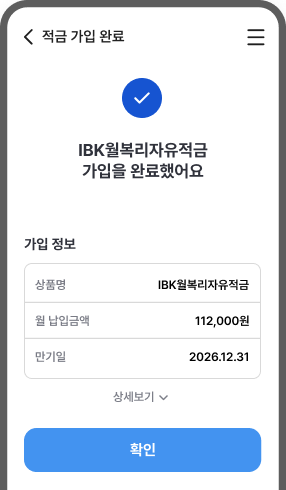
제목에 가입한 상품명을 드러내서
고객이 가입 내용을 명확히 이해할 수 있도록 합니다.
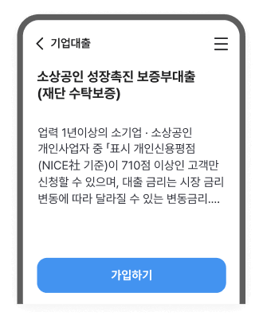
여러 조건이 한 문장에 혼재 되어
고객이 핵심 정보를 빠르게 찾기 어렵습니다.
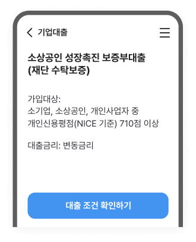
고객이 확인해야 할 정보별로 나누어 써서
고객이 필요한 정보를 빠르게 확인할 수 있도록 합니다.
작성 전 확인 포인트
고객이 주요 내용을 먼저 확인하고 다음 행동을 분명히 알 수 있게 썼나요?
- 고객이 현재 상태와 진행 결과를 바로 이해할 수 있도록 썼나요?
- 금액, 진행 상태, 조건 등 중요한 정보를 먼저 확인할 수 있나요?
- 불필요한 설명 없이 핵심만 간결하고 명확하게 전달했나요?
- 다음에 진행해야 할 행동을 분명하게 안내했나요?
- [1] Sweller, J. (1988). Cognitive load during problem solving: Effects on learning. Cognitive Science, 12(2), 257–285. https://doi.org/10.1207/s15516709cog1202_4
유용한
고객에게 도움이 되는 정보를 부담 없이 안내하는 톤
- 혜택, 가입, 참여처럼 고객에게 필요한 가치를 제안해야 할 때
- 이벤트, 추천, 프로모션처럼 참여를 유도해야 할 때
- 혜택과 장점은 명확히 안내하되, 과장된 표현은 사용하지 않습니다.
- 필요한 이유를 먼저 보여주고, 다음 행동으로 자연스럽게 연결합니다.
작성 원칙
부담 없이
다음 행동으로 연결하기
다음 행동을 이어갈 수 있도록 합니다.
고객에게 필요한 가치를
쉽게 설명하기
고객이 쉽게 이해하도록 돕습니다.
혜택과 행동을
함께 안내하기
고객이 스스로 판단할 수 있도록 돕습니다.
피해야 할 것
과장되거나 부담을 주는 표현
혜택을 과장하거나 행동을 재촉하면고객이 스스로 판단하기 어렵습니다.
행동을 강요하는 표현
행동만 앞세우면 고객이 조건을 비교해 보기 전에결정해야 한다고 느낄 수 있습니다.
혜택만 강조하는 표현
혜택의 조건이나 제한사항을 빼고 안내하면고객이 혜택을 실제와 다르게 이해할 수 있습니다.
작성 예시
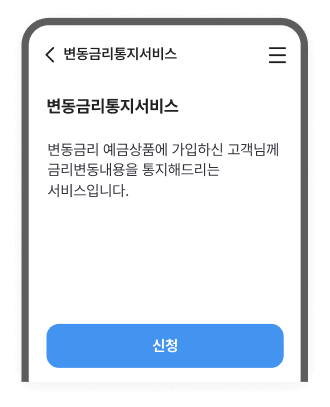
서비스 설명만 써서 고객이 어떤 도움을
받을 수 있는지 바로 알기 어렵습니다.
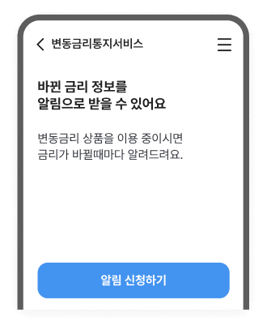
알림을 받을 수 있는 정보와 시점을 함께 안내하여
어떤 도움이 되는지 바로 알 수 있습니다.
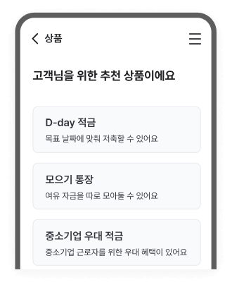
상품을 추천하는 이유가 보이지 않아서
자신에게 맞는 상품인지 판단하기 어렵습니다.
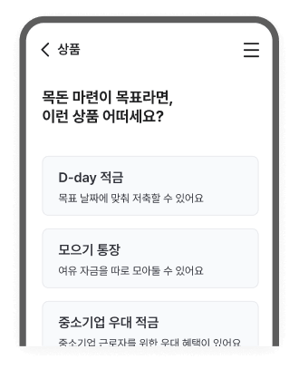
상품 추천의 목적을 함께 써서 각 상품이
고객에게 어떤 도움이 되는지 알 수 있습니다.
작성 전 확인 포인트
고객이 추천 이유와 선택 기준을 알고 자신에게 맞는 선택을 할 수 있도록 썼나요?
- 고객이 필요한 이유를 이해하고 다음 행동으로 이어갈 수 있나요?
- 혜택만 앞세우지 않고 대상과 조건이 함께 보이도록 썼나요?
- 고객이 안내를 읽고 자신의 상황에 맞는 상품이나 서비스인지 바로 알 수 있나요?
- 과장이나 강요 없이 고객이 스스로 판단하도록 썼나요?
- [1] Fogg, B. J. (2009). A behavior model for persuasive design. Proceedings of the 4th International Conference on Persuasive Technology. https://doi.org/10.1145/1541948.1541999
친절한
낯선 금융 정보와 절차를 고객이 쉽게 이해할 수 있도록 풀어 설명하는 톤
- 대출 조건, 약관, 수수료처럼 복잡한 정보를 설명할 때
- 처음 이용하는 기능이나 서비스 절차를 안내할 때
- 금융용어와 절차는 고객에게 익숙한 표현으로 쉽게 설명합니다.
- 고객이 걱정할 수 있는 상황에서는 고객의 입장을 고려하여 설명합니다.
작성 원칙
어려운 말은
고객의 언어로 풀어 설명하기
필요한 경우 짧은 설명을 덧붙입니다.
필요한 내용은
순서대로 안내하기
단계별로 나누어 고객에게 설명합니다.
예시와 비유로
풀어 설명하기
예시나 비유를 들어 설명합니다.
피해야 할 것
전문 금융용어만 앞세운 표현
전문 금융용어만 쓰면 이해가 어렵기 때문에쉬운 설명과 익숙한 표현으로 씁니다.
절차를 한 번에 설명하는 표현
여러 절차를 한 번에 설명하지 않고고객이 먼저 해야 할 일부터 안내합니다.
고객이 이미 알고 있다고 가정하는 표현
고객이 이미 알고 있다고 가정하지 않고이해에 필요한 배경 지식을 함께 안내합니다.
작성 예시
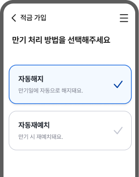
선택지만 있고 결과가 어떻게 처리 되는지는 알 수 없어서
고객은 무엇을 선택해야 할지 판단하기 어렵습니다.
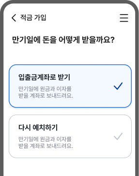
고객이 이해할 수 있는 표현으로 써서
만기일에 자금이 어떻게 처리되는지 쉽게 파악할 수 있도록 합니다.
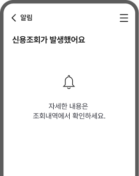
신용조회 사실만 알리고
고객이 느낄 수 있는 불안은 고려하지 않습니다.
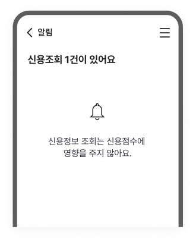
고객이 불안해할 부분을 함께 안내하여
안심하고 확인하도록 돕습니다.
작성 전 확인 포인트
고객이 낯선 정보와 절차를 쉽게 이해할 수 있도록 친절하게 풀어 썼나요?
- 금융용어와 절차를 고객이 쉽게 이해할 수 있도록 설명했나요?
- 처음 이용하는 고객도 진행 과정을 따라갈 수 있게 단계별로 안내했나요?
- 어려운 개념을 익숙한 표현이나 예시로 풀어 설명했나요?
- 고객이 걱정할 만한 부분을 미리 파악하여 안내했나요?
- [1] Brown, P., & Levinson, S. C. (1987). Politeness: Some universals in language usage. Cambridge University Press.